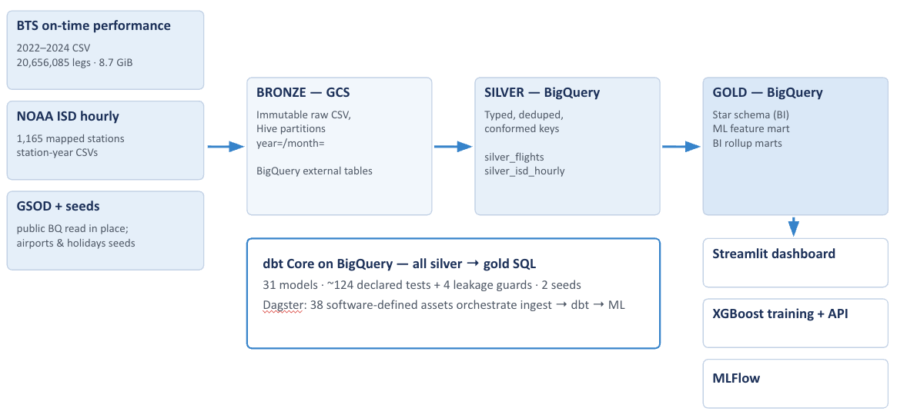
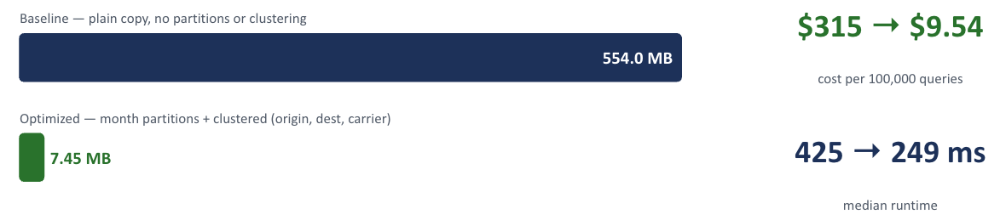

🚨Problem
We’ve all been there: you’re at the gate, boarding starts in 30 minutes, and an announcement comes over the loudspeaker saying your flight is delayed. About 20% of U.S. flights are delayed, meaning they arrive 15 or more minutes late, with passengers, airlines, and airports only finding out as it happens. The predictive signals like weather and aircraft histories, however, are publicly available; what’s missing is a product that joins them all together.
🗺️Domain
Our chosen domain for our data lakehouse project is U.S. domestic flights, with the goal of analyzing historical late flights and predicting whether a future flight will be late. We utilized data from the Bureau of Transportation Statistics (BTS) to perform analysis across carriers, airports, seasonality, and more, while adding machine learning on top of it to predict upcoming flight delays.
📊Dataset
The core historical data we used was the BTS’ on-time performance data, which covers all 20.66 million flight legs of U.S. scheduled domestic flights from 2022 to 2024. We paired this historical dataset with the National Oceanic and Atmospheric Administration’s (NOAA) hourly weather observations across 1,165 airport-adjacent stations. The combined data includes the weather at the departure airport at the scheduled departure time, totaling about 34 GB sitting in immutable CSVs in the bronze layer.
🏗️Architecture

Our architecture follows a bronze, silver, and gold design, shown in the diagram above. Raw CSVs from BTS and NOAA land in a Google Cloud Platform (GCP) Cloud Storage bucket, partitioned by year and month. BigQuery reads these files in place through external tables, so the raw data can be queried without copying it or editing it. Cleaning happens in the silver layer, where columns get types assigned to them, duplicates are removed, keys are standardized, and each flight is matched to a weather observation at its departure airport.
In the gold layer, two different consumers are served from the same layer. A star schema is used for analysis work, where a fact_flights table of ~21 million flight legs is surrounded by airport, carrier, and date dimensions. The model layer, in contrast, uses a single wide feature table with everything pre-joined. From the gold layer, a Streamlit dashboard running on Cloud Run and an XGBoost model trained from the features are served through an API.
🔧Implementation
All of our silver-to-gold transformations run as SQL in BigQuery and are managed by dbt. In total there are 31 dbt models backed by around 124 declared tests, plus 4 custom tests that guard against data leakage into the model’s features. Dagster sits on top of everything and wires ingestion, dbt, and model training into 38 assets with data quality checks between the steps. Deployments happen automatically from GitHub on every push, so there is no infrastructure for us to maintain.
The main schema decision we made was using a star schema instead of a snowflake. Snowflaking splits dimensions into sub-tables to save storage and protect against update anomalies. In our case the dimensions are tiny (374 airports, 17 carriers, 1,096 dates) compared to the 21-million-row fact table, so normalizing them would have saved kilobytes. It also would have added a join to every dashboard query, which matters when BigQuery bills by bytes scanned rather than storage. Since dbt rebuilds silver and gold from bronze instead of updating tables in place, there were also no update anomalies to protect against.
⚡Performance Benchmark

We decided to focus on one optimization decision: partitioning fact_flights by month and clustering it on origin, destination, and carrier, which are the columns our dashboard filters on. We compared it against a plain unpartitioned copy of the same table using the dashboard’s carrier delay ranking query for Chicago O’Hare Airport in June 2024. We measured the time and cost and found that the optimized table scanned 7.45 MB versus 554 MB for the baseline, a 74× reduction. Since BigQuery bills by bytes scanned, that works out to $315 down to $9.54 per 100,000 queries (near the minimum query cost).
🤖Deep Dive Capability and Evaluation
For our deep dive we chose to do an ML workflow and built a pipeline that trains a delay prediction model from the data lakehouse. The point of the design is that analytics and ML are served from the same data without duplication: the dashboard reads the star schema, the model reads the flat feature table, and both are built from the same shared tables underneath. The model reads from the gold layer rather than raw or silver data because that is where our rules are enforced. A single cutoff date (July 1, 2024) splits training from testing, so the model trains on earlier flights and is evaluated on later unseen ones. The hard constraint is that every feature must be knowable before departure, with 4 dbt tests enforcing this automatically.
We built the features up in stages, with daily weather giving us a starting point; switching to hourly weather at the scheduled departure time improved it, and the biggest jump came from features that track an aircraft through its day, since one late plane drags its later flights with it. That last group is also where we found leakage: the data records which plane actually flew, which is only known after the fact, and a last-minute plane swap is itself a signal that something went wrong. We restricted those features to flights where the actual plane matched the schedule, gave up about 0.01 of PR-AUC, and kept 89% of the improvement.
On the held-out test period the classifier reached a ROC-AUC of 0.739 and a PR-AUC of 0.465, against a base delay rate of 19.7%, so flights it flags are about 2.4 times more likely to be delayed than average. For comparison, a logistic regression baseline on the same features scored 0.665 and 0.338. We also calibrated the output probabilities, which cut the expected calibration error from 0.227 to 0.017 without changing the rankings, so a predicted 30% delay risk actually means 30%.
💭Reflection & Incorporation of Feedback
We built a star schema for analytics and a separate flattened training table for the model. Since we train infrequently and then serve, the second gold table is mostly a reshaped copy of the first, with the same leakage guards applied twice. If retraining is not on a frequent schedule, the training table is a one-time extract rather than a maintained asset. We could have written it as a single query against fact_flights and the dimensions, materialized the result once, and kept it as an artifact sitting next to the model rather than as a dbt model that rebuilds on every run.